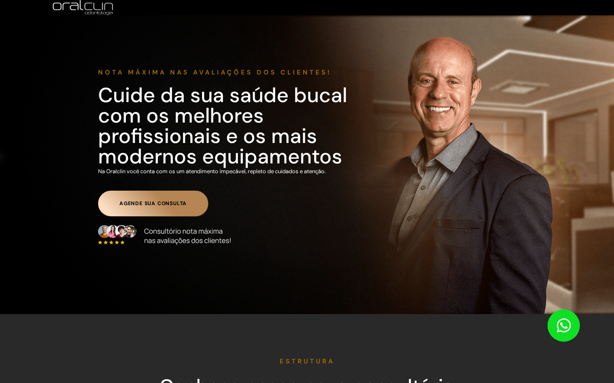
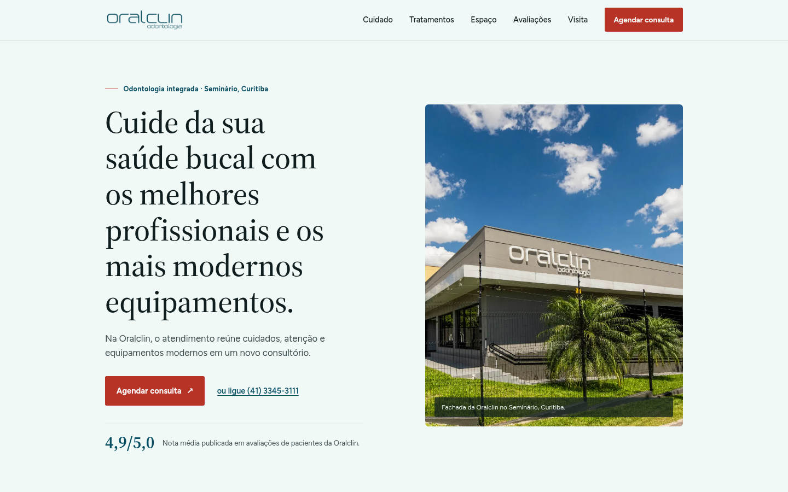

Ação em inglês
“Book Now” aparece em uma página inteiramente em português, quebrando a confiança no momento da ação.
Um conceito independente que reorganiza o que a Oralclin já publica: cuidado humano, equipamento moderno e a nota 4,9/5,0, em um caminho único até o agendamento.
Este é um conceito independente e não solicitado, preparado apenas para avaliação. Não há afiliação, aprovação, endosso ou vínculo comercial com a Oralclin Odontologia Integrada. Nenhuma alteração foi publicada no site oficial.
A leitura
A página atual publica endereço, telefones, horários, tratamentos e uma nota de 4,9/5,0. São provas reais e fortes, mas elas se repetem em blocos genéricos e o primeiro passo (agendar) demora a aparecer, especialmente para quem visita pelo celular.
Evidência visual


As três oportunidades
“Book Now” aparece em uma página inteiramente em português, quebrando a confiança no momento da ação.
Números de experiência, equipe e avaliações aparecem como “0+” antes de carregar, na primeira impressão de muitos visitantes.
Tratamentos, depoimentos e FAQ se espalham por uma página extensa antes de endereço e horário aparecerem.
O conceito
Em vez de uma grade de serviços genérica, o conceito organiza a página como um caminho curvo e contínuo. A reafirmação humana vem primeiro, tratamentos e espaço aparecem em seguida, e visita e contato encerram o percurso. A logomarca, o azul e o teal já usados pela Oralclin permanecem, com um único acento em coral reservado para agendar.
Uma serifa contemporânea suave carrega apenas as quatro frases de acolhimento já publicadas pela clínica; uma sans humanista de alta legibilidade carrega tratamentos, avaliações, horários e contato. São dois papéis, nunca misturados.
Três melhorias
“Agendar consulta” conduz ao contato local desde o topo.
A nota publicada aparece como texto, sem depender de contador animado.
Endereço, contato e forma de atendimento fecham uma jornada curta e legível.
Entrega e dependências
Homepage estática responsiva, documento de proposta separado, mapa de fontes e revisão técnica. Antes de qualquer uso público, a Oralclin precisaria validar conteúdo, horários, links de contato e autorização de uso dos ativos oficiais.
Próximo passo
Este conceito não inclui formulário, automação de contato ou promessa de resultado. O próximo passo, se a Oralclin quiser seguir, é validar internamente os textos e fatos usados aqui contra os canais oficiais antes de qualquer publicação.
Build estático, sem framework. Sem formulários, sem analytics, sem chamadas de rede em tempo de execução além dos links de telefone/e-mail/WhatsApp, que permanecem inertes nesta avaliação. Fontes auto-hospedadas (Figtree e Source Serif 4). Consulte SOURCE_MANIFEST.md para o mapa completo de evidências e SITE_REVIEW.md para os testes de direção visual aplicados.
Dúvidas sobre este conceito independente podem ser respondidas por quem o preparou; ele não substitui o site oficial da Oralclin.
Ver o conceito completo ↗